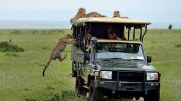
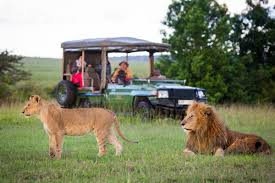
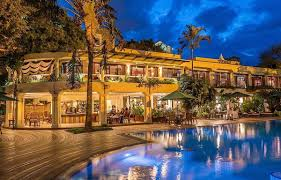

Kenya. An asphalt road to Nairobi felt really good. Late in the day we got to the Kenyan capital nicknamed Nairobbery. The roads were full and after a long time we got into a traffic jam. Standing in ques we exchanged a few looks with the neighbouring vehicles and drivers. Despite the situation found these people a smile or two for foreign tourist stuck in traffic. I still get a smile thinking of it.
gpdiuegfuwgfkughrkjghjkehjkghgjkWe spent the night in Jungle Junction camp, owned by the half German and half Indian local. His business plan included a large lawn in front of his house, the house itself and a lot of good will. The lawn was turned into a camp. After a long ride we were finally able to stretch in a nice environment, get some rest and maybe a chance for chat with other ravellers. It all took place behind the heavy iron gate – security was something that really calmed us down – since it’s easier to read bad than encouraging news about the city. Once in the camp I realized I was not the first Slovenian here, for a saw the picture on the wall with the signature of Benka Pulko (a young Slovenian woman, that travelled around the world on a motorbike). When we woke up, we went toward the Masai Mara park and realized, somebody got us a map of Uganda behind our windshield wiper. We remembered we talked about our travell plans with our neighbours, but haven’t got the chance to thank them
Beautiful spacious savannah where zebras and antelopes lazily graze, a few miles away you can see elephant walking through the bushes with heavy steps, in the distance there are elegant giraffes with long necks. People go to the Kenyan safaris to see the big five, which were in the past the most desirable animals. They were hunted for their tusks, horns and fur. Among them are the lion, leopard, buffalo, elephant and rhinoceros.
